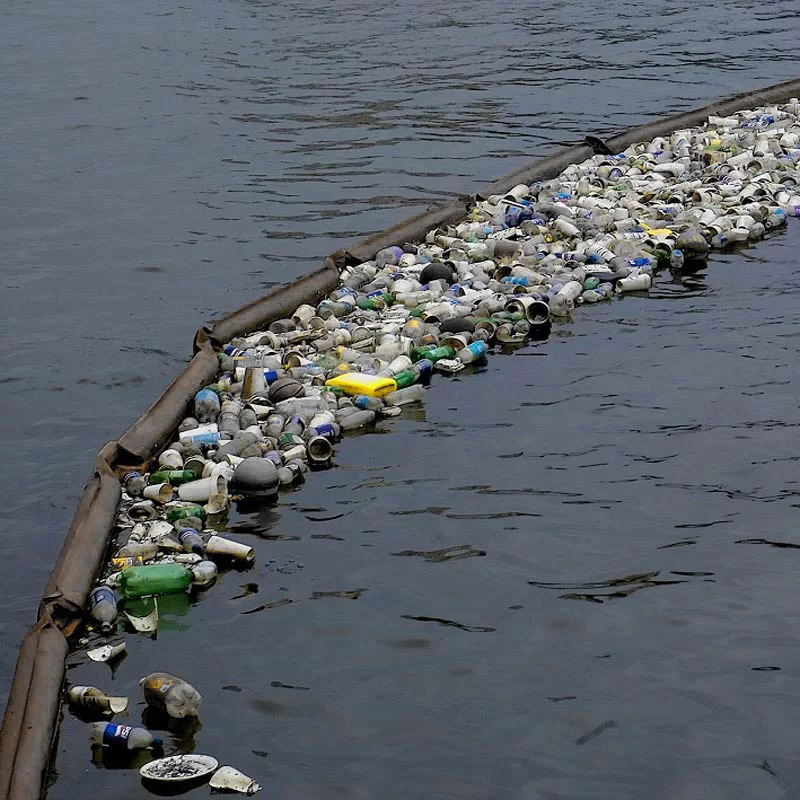
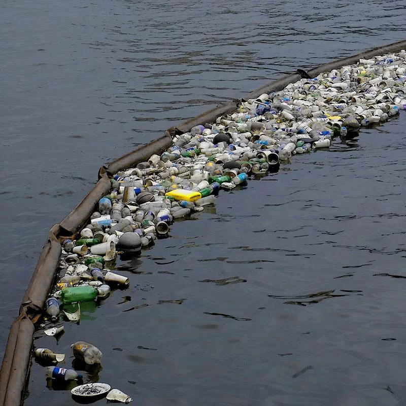
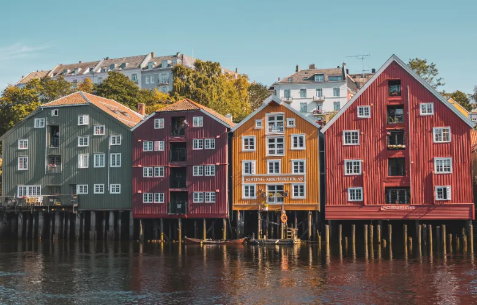

OS FLUTUANTES
Bem-vindo à nossa iniciativa para proteger os oceanos. O acúmulo de resíduos sólidos, especialmente plásticos, tem causado graves impactos na vida marinha e na qualidade da água. A presença de detritos afeta os ecossistemas, prejudicando a fauna e a flora aquática, além de comprometer a saúde das populações humanas que dependem desses recursos.

 

Sobre
Nosso objetivo é reduzir a poluição marinha causada pelos seres humanos através de tecnologia.Para alcançar esse objetivo, estamos desenvolvendo e implementando várias tecnologias inovadoras. Uma das principais iniciativas são as barreiras flutuantes.
Projetos
As barreiras flutuantes coletoras de lixo no oceano representam uma abordagem inovadora e promissora para combater a poluição marinha. Essas barreiras são estruturas projetadas para flutuar na superfície do mar e capturar detritos plásticos e outros resíduos flutuantes antes que eles se espalhem para áreas mais vastas e de difícil acesso. Construídas a partir de materiais duráveis e resistentes à corrosão, como polietileno de alta densidade (HDPE), que permite que elas suportem as condições adversas do ambiente marinho. Elas são ancoradas no fundo do oceano e posicionadas em locais estratégicos, como em correntes oceânicas ou nas embocaduras de rios, onde a concentração de lixo marinho é maior.
Objetivos
As barreiras flutuantes reduzem a poluição marinha, protegem a vida marinha, melhoram a qualidade da água, beneficiam comunidades costeiras, pescadores e o turismo, e aumentam a conscientização ambiental. Elas também fornecem dados valiosos para pesquisa e desenvolvimento de novas tecnologias e políticas ambientais.
